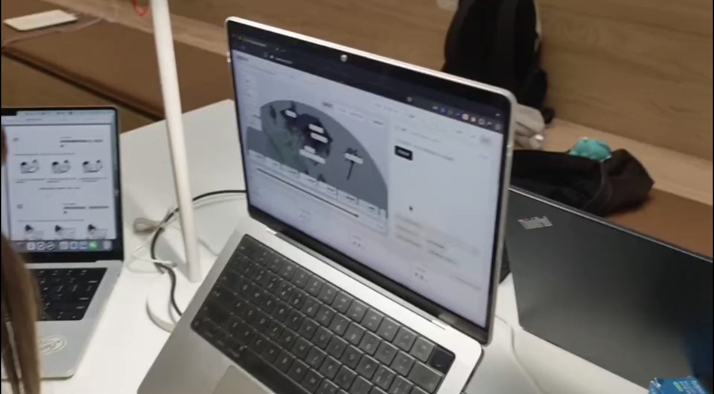

Academic team project · DECO3200
Beyond the Bill
Tested prototype + research materials
Make household energy easier to understand.
The team explored an energy dashboard and connected-device interaction. My contribution covered the questionnaire and recruitment, proposing a smart plug that the team purchased, leading the Testing Fair setup and documentation, and organising raw data.
Artifact: documented test setup, research materials and raw-data handoff. Photo from existing project documentation; dashboard and implementation were team work.